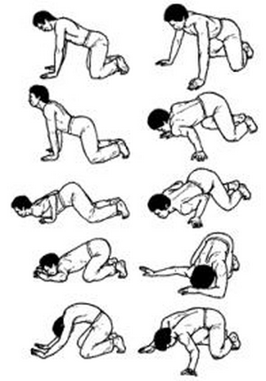

Удав меняет кожу

Исходное положение: Стоим на коленях, они максимально расставлены в стороны, ладонями вытянутых рук на ширине плеч упираемся в пол, туловище параллельно полу, ступни вместе, пятки смотрят вверх, большие пальцы ног подушечками упираются в пол, лицо обращено книзу.
Делаем вдох, одновременно приподнимаем голову и прогибаемся в пояснице, тело при этом подается грудью вперед. Затем на выдохе сгибаем руки в локтях, наклоняясь вперед и вниз. Продолжаем это движение, а затем, касаясь грудью поверхности пола, отводим корпус назад, постоянно удерживая верхнюю часть тела ближе к полу. В конце движения пальцы рук отжимаются вверх, предплечья касаются пола, ноги в коленях максимально сгибаются, руки в локтях несколько распрямляются. На вдохе, разгибая ноги в коленях и распрямляя руки, приподнимаем корпус вперед-вверх, прогибаем поясницу и чуть опускаем голову.При этом упражнении грудь совершает плавные круговые движения в вертикальной плоскости вперед — вниз и назад — вверх. Оно может выполняться и с круговыми движениями в горизонтальной плоскости. Руки при этом необходимо расставить шире плеч.Движения производятся следующим образом: на выдохе отклоняем тело назад, максимально сгибая колени и отжимаясь от пола руками, затем подаем тело вправо, сгибая в локте правую руку и отжимаясь от пола левой. Продолжаем движение вперед и влево; делаем вдох, распрямляя правую руку и сгибая в локте левую. Завершая движение влево, начинаем подавать тело назад, причем делаем выдох. Выполняя это упражнение, стремимся удерживать грудь ближе к полу, представляем, что напряжение от упора руки в пол передается по диагонали в противоположную часть живота. Упражнение выполняется аналогичным образом в другую сторону. Ритм дыхания сохраняется неизменным.
Каждый элемент упражнения повторяется 4 раза.
Next up: Рука-змея